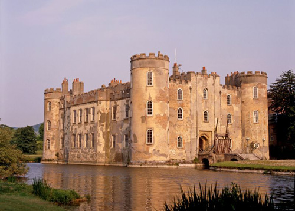
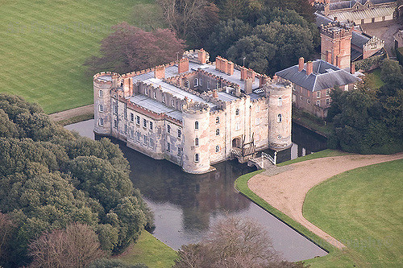
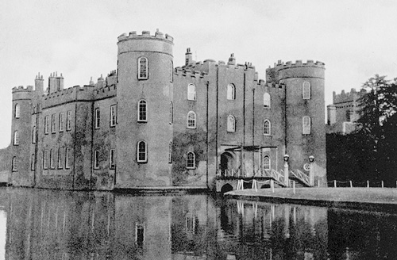
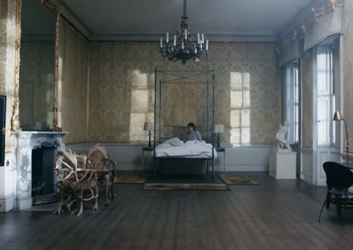

Shirburn Castle, 6 miles south of Thame, Oxfordshire used as the location for 'Styles Court'. The location used in 'The Mysterious Affair at Styles' (Chavenage House) was apparently unavailable for this episode.

Shirburn Castle was the seat of the Earls of Macclesfield. The building of Shirburn Castle was licensed in 1377 and became a centre of Recusancy throughout the 16th and 17th centuries.

A historic photograph of Shirburn Castle taken in 1925.

The room where Elizabeth Cole plays the Chopin Prelude which features prominently in the episode.